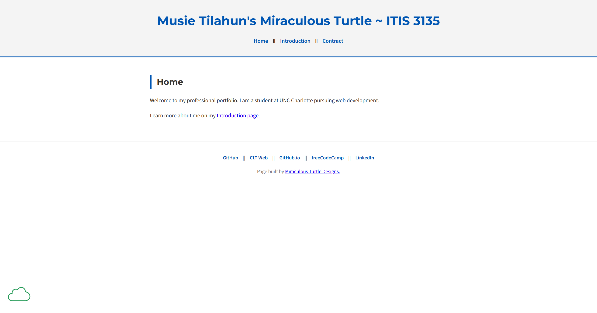

Peer Review 2
Reviewing: Tilahun, Musie
Date: 21 April 2026

- Submission: It leads directly to the page being reviewed and opens directly to Musie Tilahun's ITIS 3135 Course Page.
- File and Folder Names: There do not appear to be any spaces or uppercase letters in the file or folder names shown in the URL. The naming convention appears to be consistent.
- Design A: The page uses a simple blue, white, and gray color scheme with strong contrast that makes the content easy to read. The heading stands out clearly, and the body text is readable.
- Design B: The page uses a standard external stylesheet,
styles/default.css, along with imported Google Fonts. This helps create a consistent and professional appearance across the page. - Design CRAP: The site uses the CRAP principles well. Contrast is clear with dark text on a light background. Repetition is shown through consistent colors, typography and navigation styling. Alignment keeps the content neat and organized. Proximity helps group the related items in the header, main, and footer effectively.
- Page structure: The page has a header, main section, footer, and navigation menu. The header and footer are brought in through include components, which helps keep the layout consistent.
- Header: The header contains the site branding in an h1 with the student's name, mascot, and course number. This is clearly displayed at the top of the page.
- Main: The main section starts with the page name in an h2, which is "Home," and does not repeat the site branding unnecessarily.
- Tagline: The page branding is clear, although a visible tagline or slogan would strengthen the identity of the site even more.
- Footer: The footer includes useful links such as GitHub, CLT Web, GitHub.io, freeCodeCamp, and LinkedIn.
- Additional feedback: The page is clean, readable, and easy to navigate, which is a strength. I believe you are also missing some links.
- Overall: This is a clean and professional course page with strong readability, simple navigation, and good structure. A few added details on the homepage would make it even stronger.